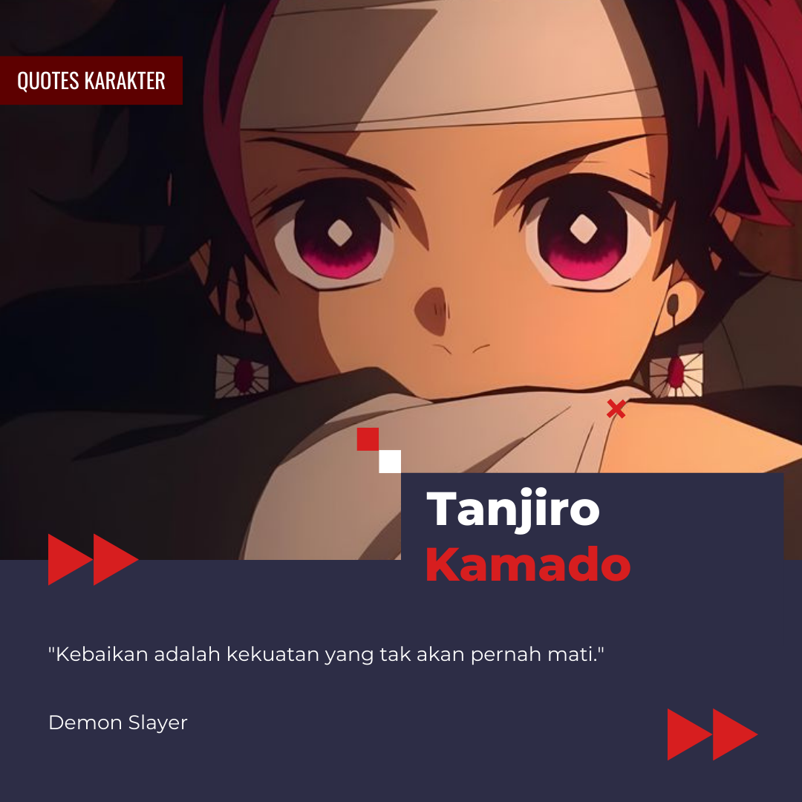
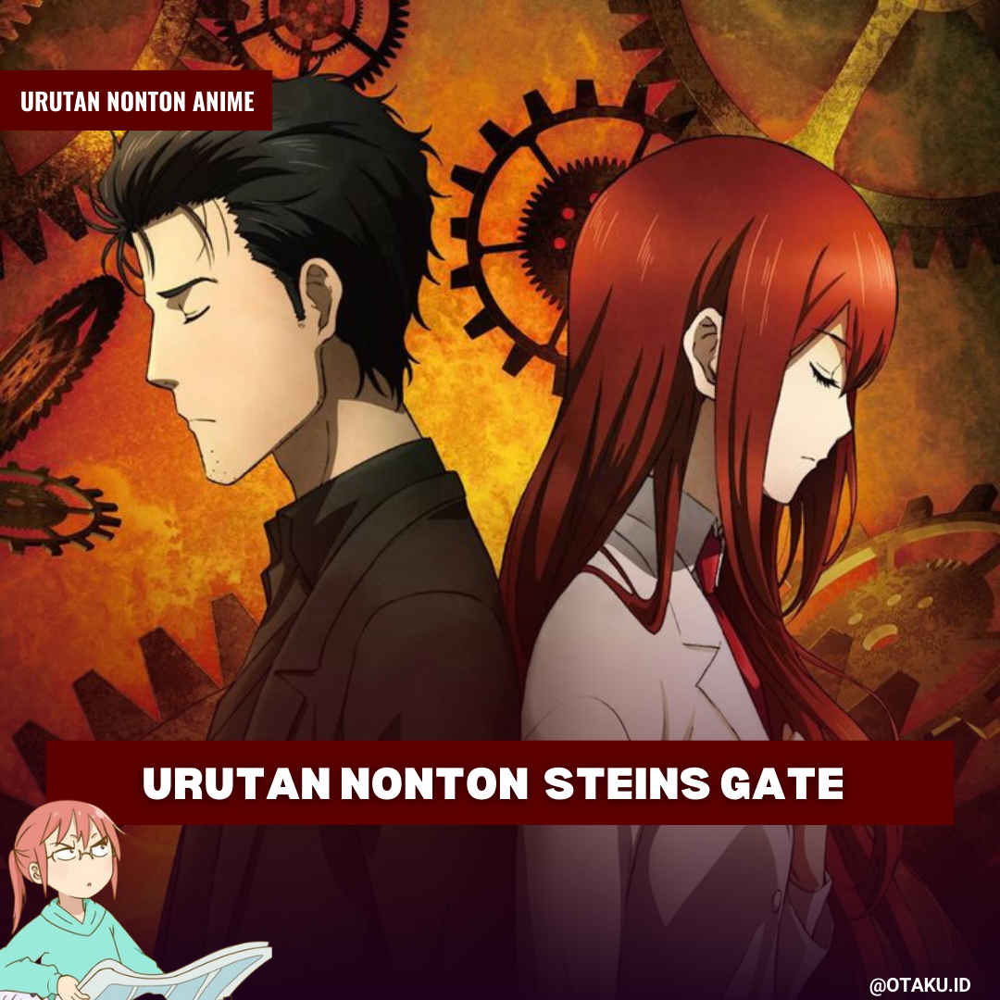
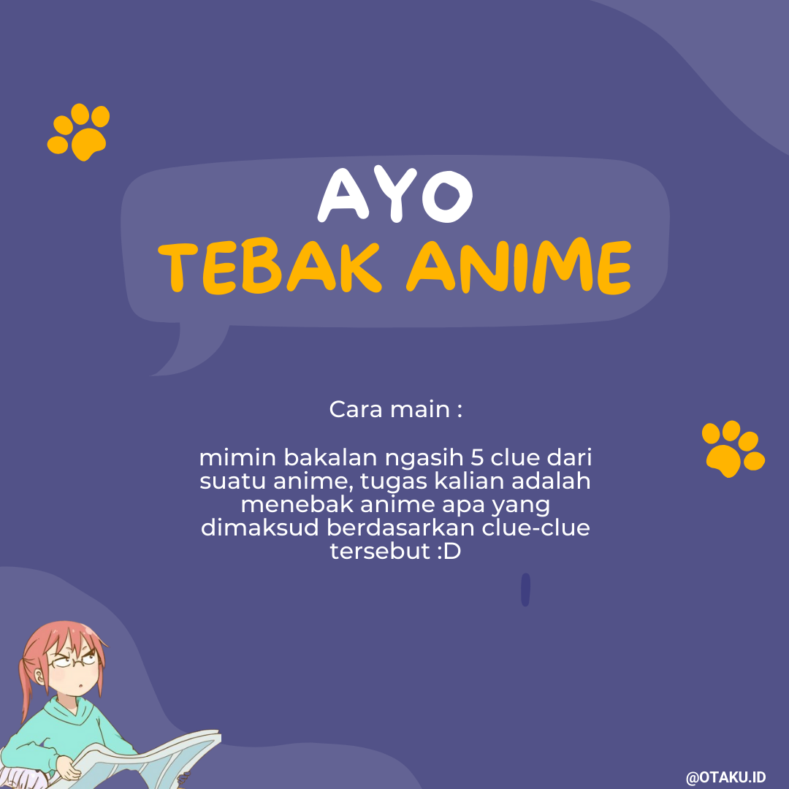
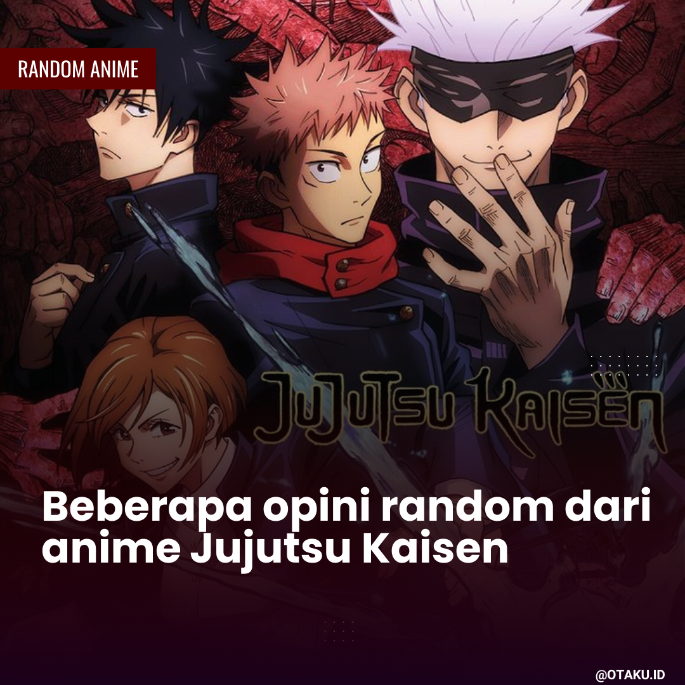

List Content




Website ini merupakan website resmi dari fanspage otakuidn__ jelajahi info lebih lengkap pada menu dibawah ini.
Getting started
Selamat datang di otakuidn_! Tempat di mana kita bisa ngobrolin segala hal tentang anime dengan santai dan seru. Di sini, kamu bakal nemuin berbagai konten menarik, mulai dari opening dan ending anime yang bikin betah, quotes-quotenya yang bisa bikin kamu mikir, rekomendasi anime yang nggak boleh dilewatin, sampai panduan urutan nonton anime biar nggak bingung. Nggak cuma itu, ada juga tebak-tebakan anime seru buat uji pengetahuanmu, fakta-fakta unik yang jarang diketahui, dan tentu aja informasi tentang perilisan anime terbaru yang wajib kamu tahu. Yuk, gabung dan bareng-bareng merayakan dunia anime yang penuh warna ini :D
Thanks for visiting.